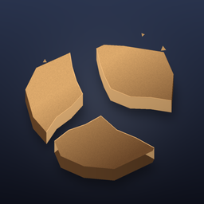

Crusher Compound支援
最後更新：2026年10月11日
有問題、想法或發現錯誤？請寫信至 yungqifr@gmail.com，我們會在幾天內回覆。
已經購買，但仍然鎖定
打開「設定」（齒輪按鈕），點一下「恢復購買」。請確認登入的是購買時使用的同一 Apple 帳號。
沒有震動
請檢查遊戲的「設定」，以及 iOS 中的 設定 → 聲音與觸覺回饋 → 系統觸覺回饋。iPad 沒有震動馬達。
沒有聲音
遊戲會遵循靜音模式。請關閉靜音模式並檢查音量。音效、音樂和環境音可在遊戲的「設定」中調整。
English Русский Українська 日本語 Deutsch Français 한국어 简体中文 繁體中文 Español Português Italiano Nederlands